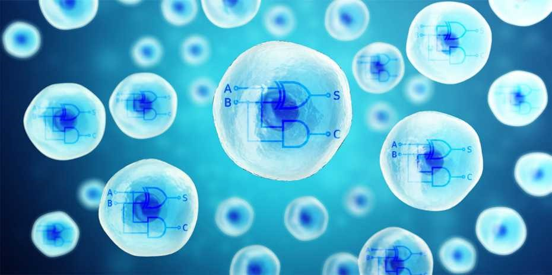

Биологические компьютеры - прорывная технология будущего
-
Биологические компьютеры - прорывная технология будущего
Ученые из Швейцарии использовали инструменты CRISPR для создания биокомпьютера. Ученые считают, что живая клетка уже готовая вычислительная машина, которая может обрабатывать данные извне. Тогда справедливо полагать, что все человеческое тело является одним большим суперкомпьютером с крайне малым энергопотреблением.
Ключевая цель синтетической биологии заключается в изучении и использовании естественных процессов метаболизма для создания логических цепей. Ученые из Цюриха использовали модифицированную версию CRISPR для создания нового вида фермента Cas9. Он может работать как элементарный процессор – считывать информацию из РНК -молекул, а также активировать определенные гены, которые запустят синтез белков, которые просто обнаружить.
Это работает как основной логический элемент, на основе которого и разработаны все схемы обработки двоичного кода. Ученым удалось поместить в одну клетку два таких обрабатывающих элемента и получили функционирующий вычислительный модуль. Если ввести в него информацию в виде биомаркеров, он вычислит и представит ответ – да или нет. Либо одно вещество, для анализа которого он запрограммирован, либо другое.